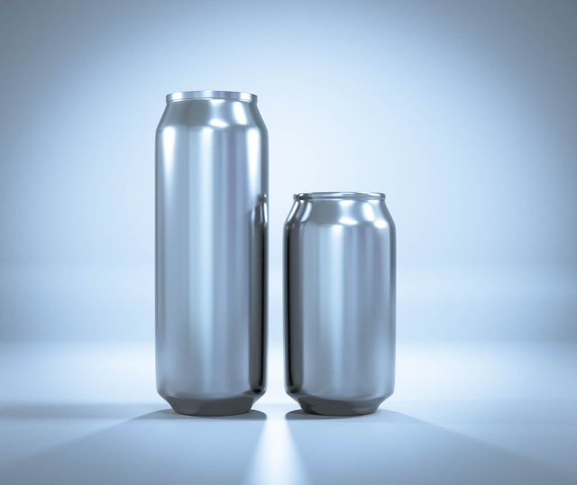

Our Story & Mission
Founded in 2026 in Johannesburg East by Milton Nxumalo, Hydrolana Co. was established to combat the severe ecological crisis caused by single-use plastic water bottles polluting South African ecosystems. Our mission is to provide South Africans with pure, premium hydration using infinitely recyclable, eco-friendly aluminum and glass packaging formats, working toward a vision to set the definitive benchmark for sustainable retail beverage packaging across Africa by 2030.
Our Water Sourcing & Transparency Index
Our premium natural spring water is sustainably sourced directly from protected underground aquifers located in Gauteng. Through strict environmental telemetry, we ensure minimal footprint extraction. According to the World Wildlife Fund South Africa (2025) report on Plastics Policy and Recyclability Realities, local consumer markets face critical plastic waste blockages; by utilizing rapid recyclability rates of aluminum, Hydrolana Co. bypasses plastic processing constraints completely.
